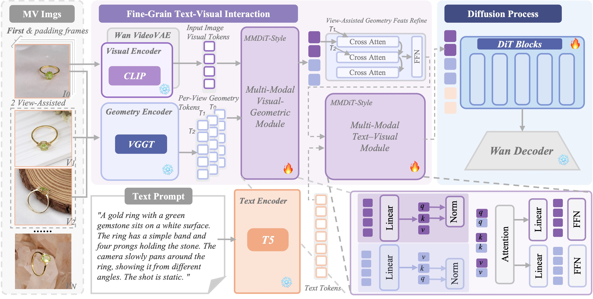
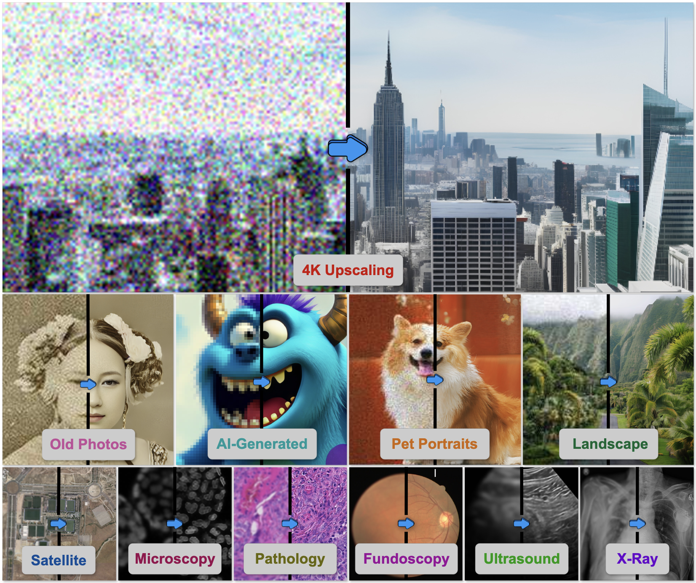
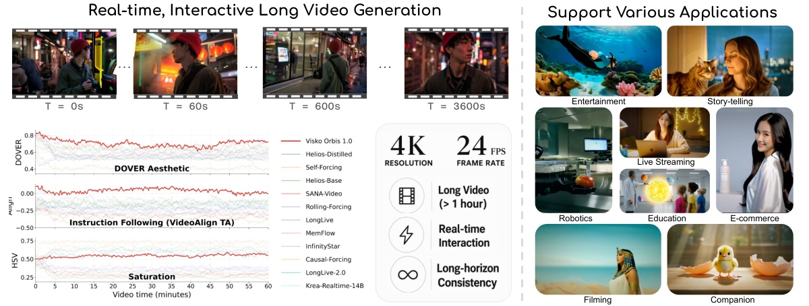
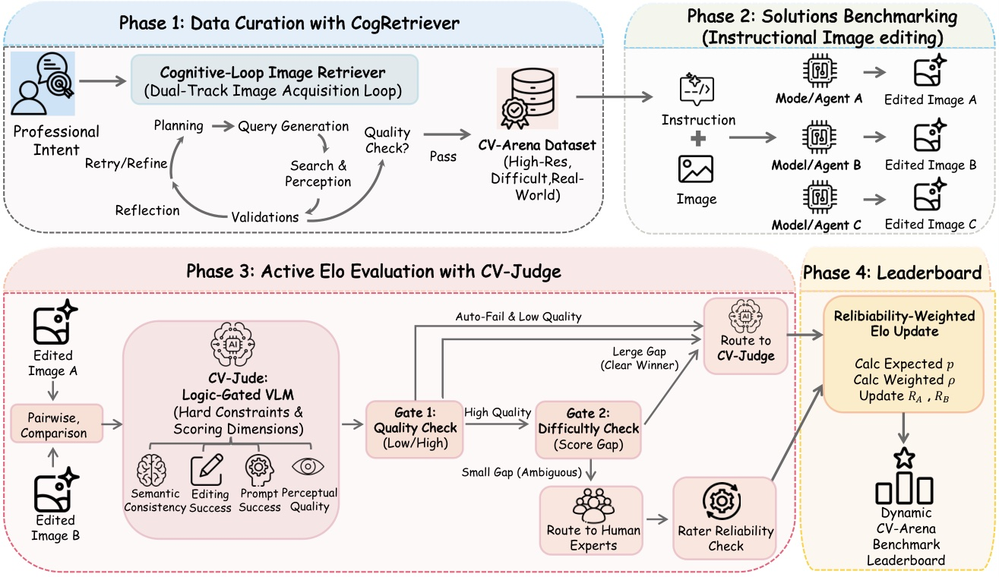
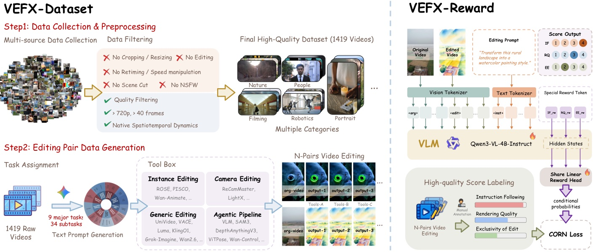
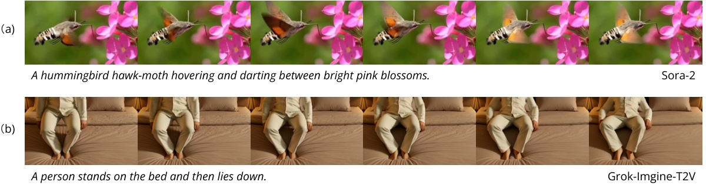
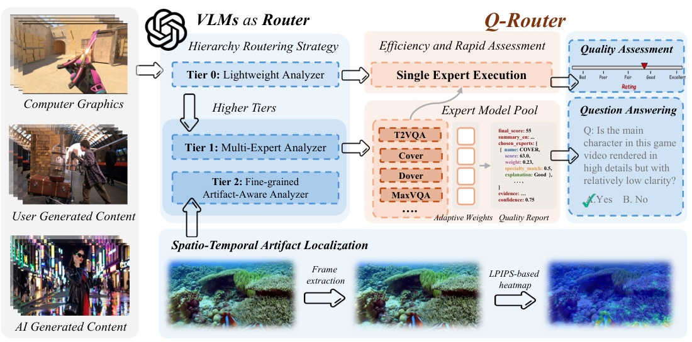
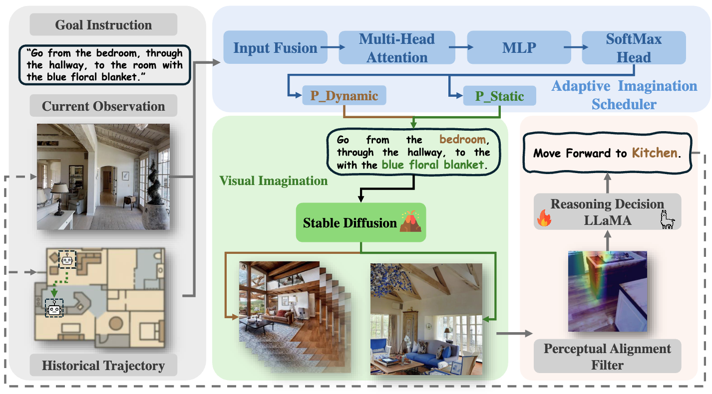

Hi there! I am a Ph.D. student in Computer Science at Texas A&M University, advised by Prof. Zhengzhong Tu, with a primary focus on image/video generative modeling, evaluation, and distillation.







